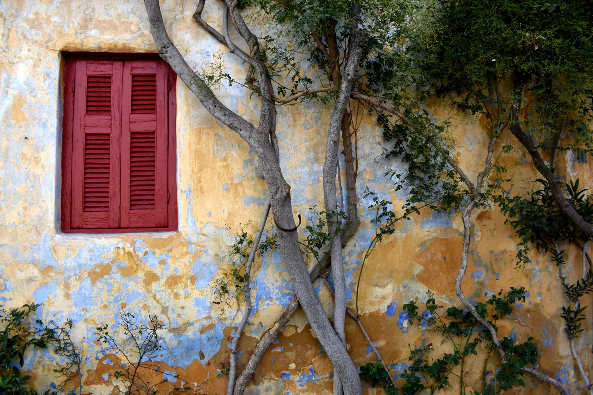

De familie Banoutsos heet u van harte welkom
Mykonos
Griekse specialiteiten midden in Utrecht, sinds 1985.
25 en 26 december
Kerst 2026 bij Mykonos
Kom deze kerst genieten met overheerlijke Griekse gerechten in feeststemming, met livemuziek en buikdanseres op 1e of 2e kerstdag.
Tijdens de kerstdagen werken we met twee shifts. Kies uw tijd:
Kerstmenu 2026
3-gangen keuzemenu € 38,95
Voordelig en uitgebreid Grieks tafelen. Stel uw 3-gangenmenu samen door een voorgerecht, hoofdgerecht en iets te drinken uit het keuzemenu hieronder te kiezen.
4-gangen keuzemenu € 42,95
Voordelig en uitgebreid Grieks tafelen. Stel uw 4-gangenmenu samen door een voorgerecht, hoofdgerecht, nagerecht en iets te drinken uit het keuzemenu hieronder te kiezen.
Voorgerechten
- Tapenade Keur van Griekse tapenades.
- Melitzana Auberginesalade op een bedje van sla met huisgemaakte dressing.
- Keftadakia Gehaktballetjes in een pikante rode saus met feta en uitjes.
- Midia saganaki Gebakken mosselen met uien, feta en knoflook.
Hoofdgerechten
- Gyros Geroosterde reepjes mager varkensvlees en tzatziki.
- Mykonos Een gemengde schotel van kipfilet, souvlaki, suzuki, gyros en tzatziki.
- Mousaka (vegetarisch) Griekse pastei met aardappeltjes en groente.
- Mixed fish Een visschotel met calamares, mosselen en gamba’s.
Nagerecht
- Grand dessert
Drinken
- Thee, koffie, espresso of cappuccino
4-gangenmenu Elliniko Trapezi voor grotere groepen
- Voorgerecht
- Combinatie van koude en warme voorgerechten.
- Hoofdgerecht
- Mixed grill van 4 soorten vlees.
- Nagerecht
- Grand dessert.
- Koffie/thee
- Een heerlijk kopje koffie of thee met iets lekkers.
- 2 personen€ 47,95 p.p.
- 4 personen€ 43,95 p.p.
- Vanaf 6 personen€ 41,95 p.p.
Liever à la carte? Bekijk de volledige kerstkaart
Koude voorgerechten
- Kruidenboter€ 5,55
Knoflook kruidenboter met brood.
- Feta salata€ 10,95
Salade met pikante fetakaas (heerlijk op brood).
- Tzatziki€ 12,75
Geklopte yoghurt met komkommer, knoflook en kruiden.
- Tarama salata€ 11,95
Een Griekse specialiteit van luchtig geklopte aardappelen en viskuit.
- Melitzana salata€ 11,95
Auberginesalade op een bedje van sla met huisgemaakte dressing.
- Tono salata€ 12,95
Geklopte eilandsalade met tonijn, tomaat en paprika.
- Tapenades€ 11,95
Keur van Griekse tapenades.
- Feta€ 13,95
De traditionele schapenkaas met olijfolie en uien.
- Carpaccio€ 18,95
Carpaccio van ossenhaas met rucola, ui, zongedroogde tomaten, pijnboompitten, kaas en pesto.
- Pikilia€ 22,45
Een combinatie van koude en warme voorgerechten.
Warme voorgerechten
- Tiropita€ 10,95
Deegbladeren gevuld met schapenkaas.
- Spanakotiropita€ 10,95
Fijn bladerdeeg gevuld met spinazie, kaas en kruiden.
- Keftedakia€ 13,95
Gehaktballetjes in een rode saus met feta en uitjes.
- Feta saganaki€ 13,95
Gepaneerde en gebakken schapenkaas.
- Midia saganaki€ 14,95
Gebakken mosselen met uien, feta en knoflook.
- Kalamaria tiganita€ 15,45
Gebakken inktvis met knoflooksaus.
- Oktapodi scharas ladolemon€ 18,95
Verse octopus van de grill met olijfolie en citroen.
- Garides fournou€ 19,95
3 grote gamba's uit de oven in tomatensaus en kaas.
- Boujourdi tou fournou€ 18,95
Feta uit de oven met schijfjes tomaat, uitjes, olijfolie en oregano (pikant of gewoon).
Vlees van de grill
Alle vleesgerechten worden geserveerd met rijst, frites en gemengde salade.
- Diafora kreata scharas€ 33,95
Mixed grill met souvlaki, lamskotelet, suzuki, kipfilet, gyros en tzatziki.
- Paidakia€ 31,95
4 lamskoteletten met gyros en tzatziki.
- Kosta piato€ 34,95
Een schotel met souvlaki, lamskotelet, gyros, kipfilet, stukje mousaka, dolmadakia (met rijst en gehakt gevulde wijnbladeren in citroensaus).
- Piato tou magira€ 35,45
Een schotel van de kok met varkenshaas, kipfilet, suzuki, souvlaki, gyros en tzatziki.
- Mykonos€ 32,95
Een gemengde schotel met kipfilet, souvlaki, suzuki, gyros en tzatziki.
- Souvlaki varkenshaas€ 29,75
Spies van varkenshaas, gyros en tzatziki.
Vlees van de grill & specialiteiten
Alle vleesspecialiteiten worden geserveerd met rijst, frites en gemengde salade.
- Souvlaki Mykonos anamikto special€ 39,95
Een spies met een mix van ossenhaas, lamshaas, varkenshaas en kipfilet met champignonsaus.
- Fileto Olympos€ 33,95
Ribeye (±275 gram) met pepersaus.
- Fileto Christina scharas€ 33,95
Ossenhaas van de grill met pepersaus.
- Kokalo-T scharas€ 36,45
Een T-bone steak (±500 gram) van de grill met pepersaus.
- Kipsouvlaki€ 26,95
Een spies van kipfilet en champignonsaus.
Plateaugerechten, voor 1 persoon of meer
Alle gerechten om te delen worden geserveerd met rijst, frites en boerensalade.
- Mykonos psaria anamikta€ 39,95
Een visschotel met zalm, gamba's, rode poon, inktvis en vissaus.
- Parthenon special€ 39,95
Een gemengde schotel met 2 lamskoteletten, kipfilet, ossenhaas en lamsfilet.
- Afroditi special€ 36,95
Een gemengde schotel met varkenshaas, ossenhaas, souvlaki, suzuki, gyros en tzatziki.
- Mezedes (vanaf 2 personen)€ 33,50
Mezedes zijn kleine traditionele gerechten (Griekse tapas). Laat u verleiden tot deze culinaire rondreis.
Visgerechten
Alle visgerechten worden geserveerd met rijst, frites en gemengde salade.
- Kalamaria€ 28,95
Gebakken inktvis met knoflooksaus.
- Gambas€ 31,95
5 grote gebakken gamba's met knoflooksaus.
- Solomos scharas€ 31,45
Een heerlijke zalmfilet van de grill met knoflooksaus.
- Thalassino piato€ 33,95
Een visschotel met inktvis, mosselen en gamba's met knoflooksaus.
- Tsipoura€ 13,95
Gegrilde doradefilet royale met dillesaus en verse groente van het seizoen.
Vegetarisch
Alle vegetarische gerechten worden geserveerd met rijst, frites en een gemengde salade.
- Stamna€ 25,95
Een ovenschotel met verse tomaten, aubergines, courgettes, wortelen, paprika, aardappels, knoflook en peterselie.
- Mousaka vegetarisch€ 26,95
Vegetarische traditionele Griekse ovenschotel met laagjes gebakken aardappel, champignons, ui, courgette en aubergine, afgedekt met romige bechamelsaus en feta. Geserveerd met tzatziki.
Oven- en pangerechten
Alle ovengerechten worden geserveerd met gemengde salade.
- Kleftiko€ 31,95
Lekker mals lamsvlees zonder bot met vers gestoofde groente en aardappeltjes.
- Arnaki stifado€ 32,95
Een op boerenwijze bereide stoofschotel met lamsschouder, kleine sjalotjes en patates fournou.
- Arnaki me patates fournou€ 31,95
Lamsschouder met aardappeltjes en knoflook uit de oven.
- Mousaka€ 27,95
Ovenschotel met meerdere lagen gebakken aardappelen, aubergines, gehakt, bechamelsaus, feta en tzatziki.
- O mezes tou bekri (gerecht van de dronken man)€ 32,95
Gesneden stukjes varkenshaas en Griekse gekruide worst met champignons, paprika en uien in een rode saus afgeblust met Metaxa 5. Wordt geserveerd met rijst, frites en gemengde salade.
Kindermenu’s
- Fileto kotas€ 16,95
Kipfilet met frites, appelmoes en mayonaise.
- Souvlaki Stavros€ 16,95
Vlees aan de spies met frites, appelmoes en mayonaise.
- Gyros€ 16,95
Gesneden stukjes vlees met frites, appelmoes en mayonaise.
Bijgerechten
- Soté laxanika€ 6,55
Gebakken groenten, rode paprika, groene paprika, champignons, aubergine, courgette en dressing.
- Patates fournou lemonates€ 7,95
Aardappeltjes uit de oven met knoflook, oregano en citroen.
- Patates€ 4,95
Extra frites.
Extra sauzen
- Kafteri saltsa€ 4,35
Pikante rode saus.
- Skordo saltsa€ 4,35
Op Griekse wijze bereide knoflooksaus.
- Manitaria saltsa€ 3,10
Champignonsaus met Griekse kruiden.
- Piperi saltsa€ 4,35
Pepersaus.
- Tzatziki extra€ 5,55
Overheerlijke geklopte Griekse yoghurt.
Wij werken uitsluitend met dagverse producten. Hierdoor bestaat de kans dat één van de bovengenoemde gerechten niet gereserveerd kan worden.
Een familierestaurant, sinds 1985
In 1985 begonnen Kostas en Anna restaurant Mykonos. Sindsdien serveert de familie niet alleen goed Grieks eten, maar ook gezelligheid en gastvrijheid midden in het centrum van Utrecht.
Sinds enkele jaren versterkt ook de tweede generatie het restaurant. Stavros, Angelos en Giorgos brengen Mykonos de toekomst in en verwelkomen u graag voor een Grieks avondje uit.
Voor onze familie is eten en samenkomen belangrijk. Wij nodigen u dan ook graag uit om met uw familie en vrienden langs te komen en de Griekse keuken te komen proeven.
Kali orexi, eet smakelijk!
Voordeelmenu’s
Voordelig en uitgebreid Grieks tafelen: stel zelf uw menu samen uit het keuzemenu.
3-gangen keuzemenu € 33,95
Kies een voorgerecht, een hoofdgerecht en iets te drinken uit het keuzemenu hieronder.
4-gangen keuzemenu € 38,95
Kies een voorgerecht, een hoofdgerecht, een nagerecht en iets te drinken uit het keuzemenu hieronder.
Voorgerechten
- Tapenade Keur van Griekse tapenades.
- Melitzana Auberginesalade op een bedje van sla met huisgemaakte dressing.
- Keftadakia Gehaktballetjes in een pikante rode saus met feta en uitjes.
- Midia saganaki Gebakken mosselen met uien, feta en knoflook.
Hoofdgerechten
- Giros Geroosterde reepjes mager varkensvlees en tzatziki.
- Mykonos Kipfilet, suzuki, suflaki, giros en tzatziki.
- Mousaka (vegetarisch) Griekse pastei met aardappeltjes en groente.
- Mixed fish Een visschotel met calamaris, mosselen, gamba’s en knoflooksaus.
Nagerecht
- Grand dessert
Drinken
- Thee, koffie, espresso of cappuccino
4-gangenmenu Elliniko Trapezi voor grotere groepen
- Voorgerecht
- Combinatie van koude en warme voorgerechten.
- Hoofdgerecht
- Mixed grill van 4 soorten vlees.
- Nagerecht
- Grand dessert.
- Koffie/thee
- Een heerlijk kopje koffie of thee met iets lekkers.
- 2 personen€ 43,95 p.p.
- 4 personen€ 39,95 p.p.
- Vanaf 6 personen€ 36,95 p.p.
De perfecte locatie voor uw feest
Bent u op zoek naar een locatie voor uw feest, zakelijk diner of bruiloft? Dan bent u bij ons aan het juiste adres. Wij verzorgen de gehele avond, zodat u kunt proeven van de Griekse keuken en sfeer.
Neem vandaag contact met ons op voor de mogelijkheden.
Reserveren
Reserveer vandaag nog voor een gezellig avondje uit met verse Griekse gerechten midden in Utrecht.
030 234 0960U kunt iedere dag tot 16:00 uur reserveren voor dezelfde avond; daarna kunt u alleen nog reserveren voor de dagen en maanden erna. Zo kunnen wij iedereen een plaats geven in het restaurant.
Heeft u speciale dieetwensen of wilt u een specifieke plek in het restaurant? Geef het gerust door, dan houden wij er zo veel mogelijk rekening mee.
Liever thuis eten?
Bestel en betaal gemakkelijk online en geniet thuis van de gerechten van ons Griekse restaurant.
Plaats uw bestellingJarig? Een gratis 3-gangenmenu cadeau
Uw verjaardagscadeau is geldig in de maand dat u jarig bent. U kunt één verjaardagscadeau per gezelschap inleveren, op vertoon van legitimatie in het restaurant. Uitsluitend geldig in het restaurant en niet via Thuisbezorgd.nl.
Tot ziens bij Mykonos
- Adres
- Drakenburgstraat 3
3512 AC Utrecht - Telefoon
- 030 234 0960
- info@restaurantmykonos.nl
- Open
- Maandag t/m zondag 16:00 – 23:00
Keuken 16:00 – 22:30 - Volg ons